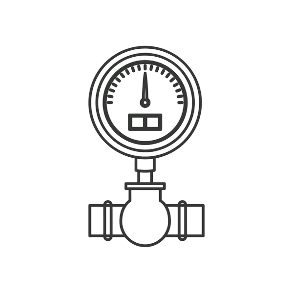

Meteran

Ph air

pengaduan
data monitoring
Meteran
Ph air
pengaduan
data monitoring
Salah satu wilayah dengan potensi debit air melimpah adalah Desa Somosari Kecamatan Batealit Kabupaten Jepara Jawa Tengah. Desa Somosari merupakan desa yang terletak di kaki Gunung Muria dengan letak geografis < 500 MDPL dan memiliki intensitas curah hujan 5,00 mm yang seharusnya dapat mencukupi kebutuhan air bersih masyarakatnya secara menyeluruh. Desa Somosari ini memiliki 31 RT dan 4 RW yang tersebar di beda kawasan karena daerahnya yang berlereng, dengan keadaannya yang demikian menyebabkan ada dua tantangan utama yakni, pendistribusian untuk tercukupinya kebutuhan air masyarakat dan irigasi dalam sektor pertanian.